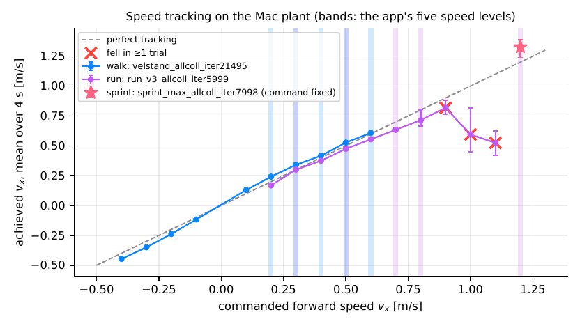
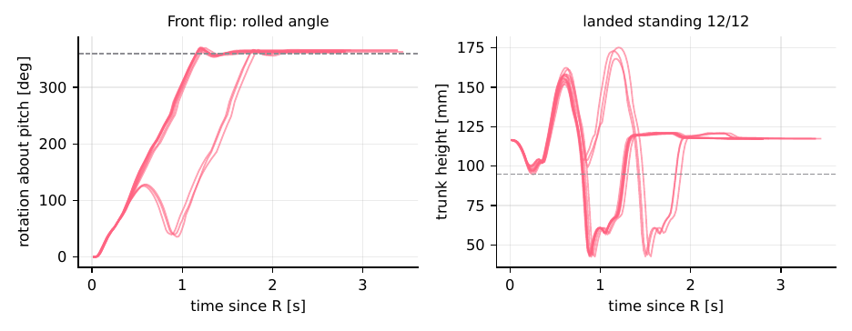

Seven skills. One small duck.
1.33m/sTop speed
Numbers come from separate simulation trials, not from these clips.
Same duck. Slower muscles.
The original MicroDuck runs on Dynamixel XL330 servos. This one runs on Feetech HD1910s, so every skill was retrained against a model of the slower servo.
40%slower at top speed
1.02 N·mstall torque in the model
261 msfor a 10° step, measured on a real servo

Drive it from the keyboard.
Duck Live is a Mac app that puts every skill under a key and lets you shove the duck around with the mouse.
7policies, one interface
27emotion clips
1 in 920falls while acting
0.62 msper control tick on a laptop
Measured, not promised.




Everything on this page is simulation. No policy has run on the physical duck yet.
Built on Pollen Robotics' MicroDuck, the NVIDIA and Hugging Face Isaac Lab port, kissqy's HD1910 replica, the servo fit from LuwuDynamics and Rhoban BAM, and Thomas Burgess's jump recipe.